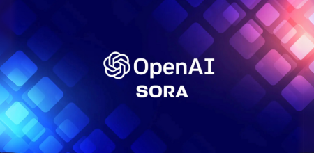
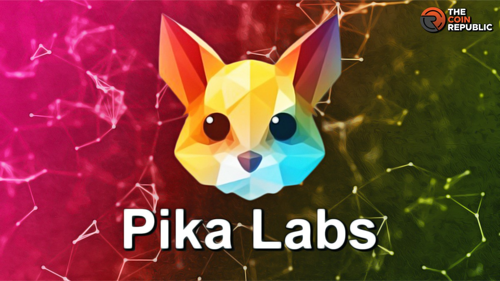
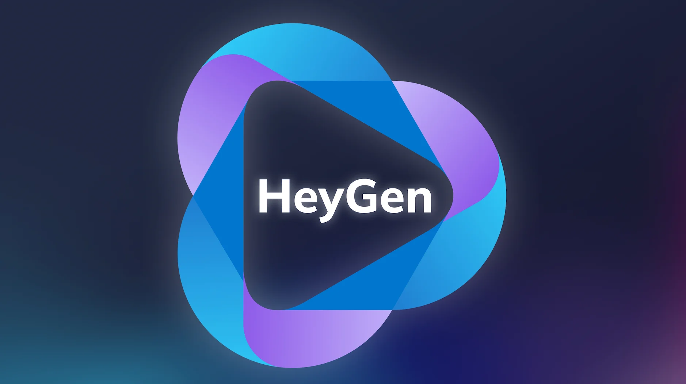

¿Qué es una IA generadora de video?
Las IA generadoras de videos son herramientas que utilizan inteligencia artificial para crear, editar o modificar videos a partir de texto, imágenes o clips existentes. Estas tecnologías están avanzando rápidamente y tienen aplicaciones tanto creativas como controvertidas. Aquí te explico los aspectos clave:

Sora (OpenAI)
Genera videos realistas a partir de texto (aún en fase de prueba).

Runway ML
Permite editar y generar videos con efectos avanzados.

Pika Labs
Crea videos cortos a partir de prompts de texto.

HeyGen
Crea avatares y videos con voces clonadas.
Estas herramientas usan redes neuronales y grandes bases de datos de imágenes para generar contenido visual nuevo.
¿Cómo funcionan?
Aprenden de grandes bases de datos de videos, imágenes y audio.
Pueden crear videos desde cero usando descripciones de texto (prompts) o transformar videos existentes (ej.: cambiar estilos, añadir elementos).
- Difusión (Diffusion Models): Similar a las IA de imágenes, pero aplicado a secuencias de video.
- Redes Generativas Adversarias (GANs): Dos modelos compiten para mejorar la calidad del video generado.
- Modelos de lenguaje + imágenes: Combinan IA de texto e imágenes para generar secuencias coherentes.
Aplicaciones
- Cine y animación: Generar escenas o efectos visuales.
- Publicidad: Crear anuncios personalizados rápidamente.
- Educación: Videos explicativos generados automáticamente.
- Redes sociales: Contenido viral o memes generados por IA.
- Deepfakes: Suplantación de rostros o voces (con riesgos éticos).